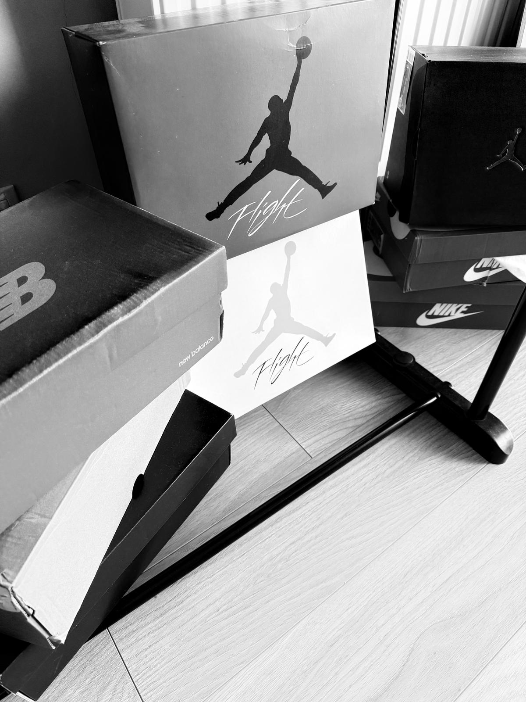

Moda streetwear to styl ubierania się, który jest inspirowany kulturą uliczną, muzyką, sportem i codziennym życiem. Dużo osób interesuje się tym stylem, bo pozwala ubierać się wygodnie, a jednocześnie modnie. Nie chodzi tu o eleganckie rzeczy, tylko raczej o bluzy, sneakersy, t-shirty z nadrukami, szerokie spodnie i czapki.
Dla niektórych streetwear to coś więcej niż ubrania – to sposób wyrażania siebie. Poprzez to, co się nosi, można pokazać, co się lubi, jakie marki się wspiera, albo jakie ma się zainteresowania, np. muzyczne czy sportowe.
Popularne są marki takie jak Nike, Adidas, Supreme, Carhartt czy lokalne brandy, które często mają ciekawe, oryginalne projekty. Sporo osób śledzi nowości, ogląda lookbooki, a nawet zbiera limitowane rzeczy.
Dla mnie streetwear to po prostu wygodny styl, który pasuje na co dzień. Nie trzeba się specjalnie stroić, a i tak można wyglądać dobrze. Lubię czasem sprawdzić nowe kolekcje albo zobaczyć, co noszą inni, ale nie robię z tego wielkiej sprawy. Po prostu noszę to, co mi się podoba.

Powrót do strony głównej...